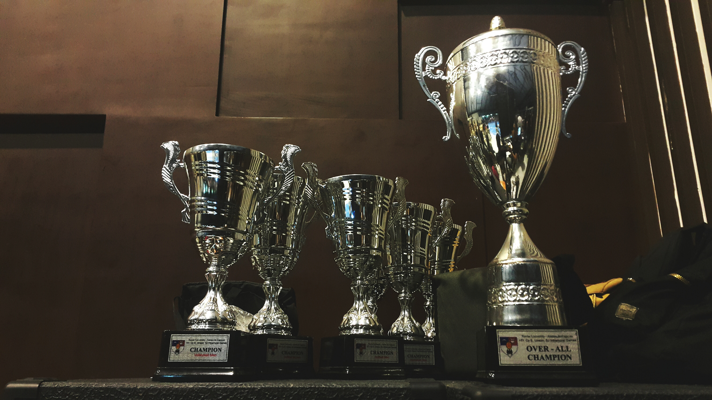

2020년 SBS 월화드라마 <브람스를 좋아하세요?>에서 바이올린을 너무 사랑한 나머지 경영학과를 졸업하고 음대에 재입학한 늦깎이 음대생 바이올리니스트 채송아 역을 맡아 꿈과 현실의 경계에 선 스물아홉의 청춘을 연기했다. 극 중 프로페셔널 연주자들에게도 만만치 않은 기교가 요구되는 프랑크 바이올린 소나타, 브람스 바이올린 소나타 등에 정면 도전해 거의 한 악장을 대역 없이 실제 연주해서 클래식 업계 종사자들의 드라마 리뷰 영상이 올라오기도 했다
2020년 12월 31일 2020 SBS 연기대상에서 <브람스를 좋아하세요?>로 김민재와 단독 베스트 커플상, 미니시리즈 판타지로맨스 부문 여자 최우수연기상을 수상하였다. 이로 인해 2021년 1월 1일 0시 새해 첫 검색어 1위의 주인공이 되었다.